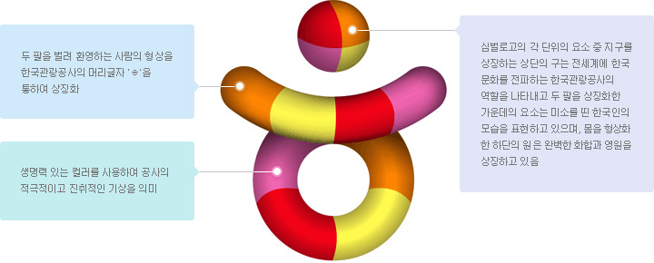

HOME > 공사안내 > CI
CI
색상규정 및 활용

두 팔을 벌려 환영하는 사람의 형상을 한국관광공사의 머리글자 'ㅎ'을 통하여 상징화
생명력 있는 컬러를 사용하여 공사의 적극적이고 진취적인 가상을 의미
심벌로고의 각 단위의 요소 중 지구를 상징하는 상단의 구는 전세계의 한국 문화를 전파하는 한국관광공사의 역활을 나타내고 두 팔을 상징화한 가운데의 요소는 미소를 띤 한국인의 모습을 표현하고 있으며, 몸을 형상화한 하단의 원은 완벽한 화합과 영원을 상징하고 있음
한국관광공사 CI 상표권은 한국관광공사에 귀속되며, 공사 내 부서/지사와 사전협의 없는 무단 사용을 금합니다.
- First Color Palette
- Secondary Color Palette
한국관광공사의 전용색상은 한국관광공사를 대표하는 또 하나의 중요한 수단이므로 지정된 색상을 통일성 있게 사용하는 것이 중요하다. 전용색상의 사용은 별색 사용을 원칙으로 하며, 표현 매체(신문, 잡지 등)에 따라 4원색 (4 Color Process) 인쇄를 할 수도 있다. 특히 4원색 (4 Color Process)규정에 따르는 경우 명도, 채도 등 차이가 심할 수 있으므로 색상견본과 비교하여 최상의 표준 색상을 얻도록 하며, 표현 매체의 원고색을 지정할 때에는 Pantone Color 번호를 사용하도록 한다.